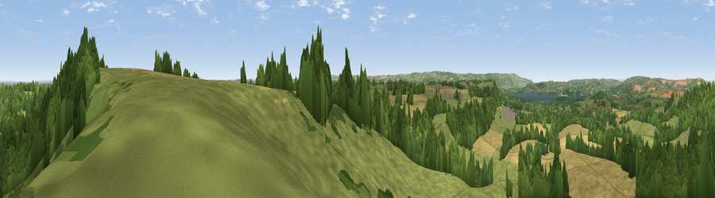

Viewpoint near Stowey
#17011 in England · top 30% of its area beats it · near Stowey · access?Where it is
The exact computed spot (ST 61175 60825). Click the marker for map links.
Public access: no public right of way or access land is recorded at this exact spot — it may be on private land. Computed from Natural England's CRoW access layer and OpenStreetMap rights of way — not the legal definitive map. Always verify locally.
The view, rendered

A 360° render of this exact spot computed from the terrain model, tree cover and land cover — summer colours, afternoon light, calibrated against photographs of famous viewpoints. Real trees, hedges and buildings will differ in detail.
The panorama
Grey silhouette: terrain skyline in each direction (720 bearings, Earth curvature and refraction included). Dashed green: skyline with trees (+15 m) and buildings (+8 m) as obstacles. Blue strip: how far the ground is visible on each bearing.
Where the view opens
Wedge length = distance to the farthest visible ground on that bearing (vegetation-aware). Rings at 10, 25 and 50 km.
What fills the view
49% grassland · 29% woodland · 20% cropland ·
Angular shares of the visible panorama (visual magnitude), not map area. Landscape diversity 0.48 (0–1 Shannon).
Key numbers
More beautiful places nearby
The staircase of upgrades: each row has a higher view potential than everything closer. Driving times are estimates from straight-line distance, calibrated against real road routing — check an actual route before setting out.
| Place | Direction | Drive | Score |
|---|---|---|---|
| Viewpoint near Clutton | S · 1 km | ~3 min | 61.6 |
| Viewpoint near Chelwood | ESE · 2 km | ~6 min | 63.5 |
| Viewpoint near Chelwood | ESE · 3 km | ~7 min | 70.6 |
| Viewpoint near Norton Malreward | NNW · 6 km | ~13 min | 72.9 |
| Viewpoint near Kelston | ENE · 12 km | ~22 min | 74.2 |
| Viewpoint near North Stoke | NE · 12 km | ~23 min | 75.4 |
| Beacon Batch | WSW · 13 km | ~24 min | 79.4 |
| Bleadon Hill [Loxton Hill] | W · 25 km | ~40 min | 79.6 |
51.34517, -2.55882 · source: screening · position refined by local search. Computed location — check access rights before visiting.